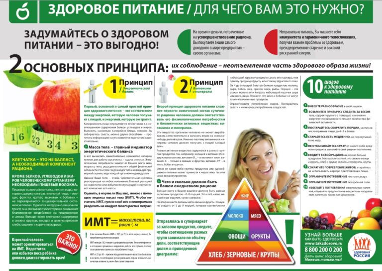

ЗОЖ
Одним из актуальных вопросов для современной молодежи является сохранение и укрепление собственного здоровья. Но стоит помнить, что здоровый образ для каждого человека является индивидуальным. Каждый человек руководствуется не только определенными законами общества, но и индивидуальными особенностями организма.
Поэтому важнейшей задачей общества является сохранить здоровье молодого поколения. Ведь к настоящему моменту данная возрастная категория испытывает определенные трудности, которые связаны и с социальными факторами, и с негативным воздействием окружающей среды. Всё это происходит по причине вынужденной адаптации под быстро меняющиеся условия жизни, обучения и т.д. Особую остроту приобретает данный вопрос в условиях социально-демографического кризиса, т.к. значимость приобретают задачи, которые непосредственно связанны с устранением негативных тенденций в молодежной среде. Сюда входит и курение, и алкоголизм, и преступность, и многое другое. А значит необходимо прививать молодежи необходимость ведения здорового образа жизни
Здоровый образ жизни (он же ЗОЖ) — это такой образ жизни, который направлен на сохранение здоровья, профилактику болезней и укрепление организма в целом. Он помогает не только сохранять и укреплять здоровье, но и улучшать работоспособность организма, раскрывать в человеке его лучшие физические качества. Стоит помнить, что здоровый образ жизни — это не только отказ от вредных привычек, это ещё и умение организовывать свою повседневную жизнь так, чтобы по максимуму использовать все свои личностные качества для достижения физического, душевного и социального благополучия.
Сюда входит множество различных факторов: грамотно выстроенный режим отдыха, соблюдение гигиены и психогигиены, правильное питание. Напротив, антиподы здорового образа жизни — это вредные привычки. Курение, алкоголь, наркотики и другое. Но вредные привычки могут быть не только явными. Например, это может быть приверженность к сидячему образу жизни. А как показывает практика, одна вредная привычка “тянет” за собой другую, другую и так может продолжаться до бесконечности. К сожалению, привить студентам системное поддержание ЗОЖ только на основании того, что это полезно для здоровья — довольно проблематично. Поэтому необходима пропаганда здорового образа жизни, физической культуры и спорта как фактора не только поддержание здоровья, но и выработки воли, ловкости, мужества и т.д.
Здоровый образ жизни включает в себя и несколько простых, но вместе с тем очень важных компонентов: правильный режим труда и отдыха, отсутствие вредных привычек, достаточную двигательную активность, личную гигиену, закаливание, рациональное питание, психоэмоциональное состояние и многие другие.
Ещё одним важным моментом является соблюдение распорядка дня. Говоря о студентах, то психологи советуют устанавливать им распорядок дня, чтобы выработать у себя динамический стереотип. Его физиологическая суть в том, что в коре больших полушарий формируется последовательность действий (в частности возбуждения и торможения), которые необходимы для производительной деятельности. Нужно адаптировать свой распорядок дня под расписание учебного заведения и свои индивидуальные особенности организма.
Для формирования здорового образа жизни необходимо соблюдать следующий распорядок дня:
Не обязательно быть профессиональным спортсменом. Главное, чтобы это вам нравилось. Занятие спортом не только делает нас сильнее и увереннее в себе, но и дает возможность знакомиться с очень интересными людьми.
Мы хотим видеть людей не только всесторонне образованной и духовно красивой, но и здоровой, закалённой, физически крепкой. Ведь физически крепкий человек в боевой обстановке сможет полнее использовать свои физические возможности. Да и вообще человеку требуются крепкие мышцы и хорошее здоровье. Это поможет ему производительнее трудиться, культурнее проводить свой досуг.
Молодым людям особенно необходимо помнить, какое важное значение имеет спорт для укрепления здоровья. Люди, не занимающиеся спортом и физической культурой, часто болеют, движения их скованы. Нервная система у этих людей также значительно ослаблена, тонус её снижен, поэтому они нередко без видимой причины жалуются на плохое настроение, рассеянность, плохую память, пониженную работоспособность.
А мы утверждаем, что спорт и только спорт развивает у человека выносливость, быстроту, ловкость, силу, внимательность и волю к победе.
Спорт всегда пользовался неизменной любовью молодёжи и считался одним из важнейших средств, входящих в разные системы физического воспитания.
Нужно задуматься над своим образом жизни и отнестись к этому очень серьёзно. Ведь здоровое подрастающее поколение – это здоровая нация в будущем.
